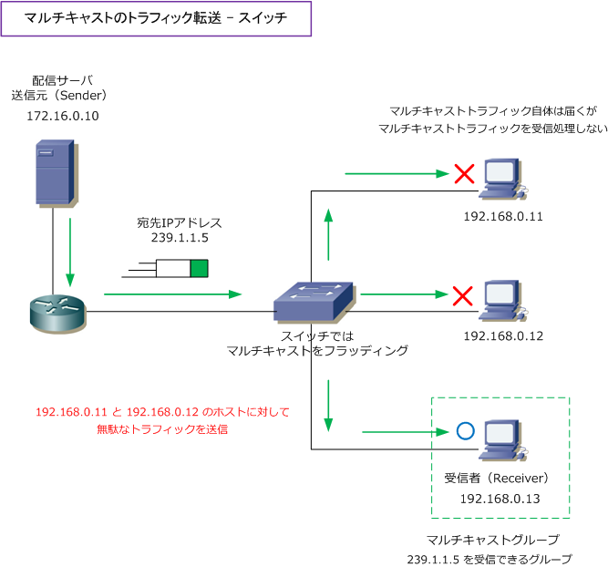
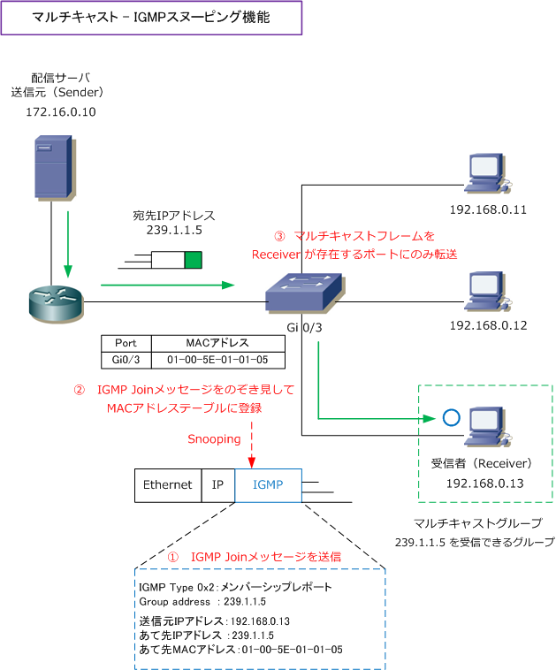

IGMP Snooping
IGMPスヌーピングとは
IGMPスヌーピングとは、IGMP Joinメッセージを盗み見（スヌーピング）することにより、参加したい マルチキャストグループのアドレスを識別して、どのスイッチポートにどのマルチキャストグループの Receiverがいるのか認識できることから、適切にマルチキャストパケットを転送できる機能のことです。
IGMPスヌーピング機能の必要性を理解するために、まずスイッチのデフォルトの動作を見てみましょう。
フラッディングするL2スイッチの問題
L2スイッチのデフォルト設定では、ブロードキャストフレーム同様にマルチキャストフレームを同一の セグメント上の全てのポートにフラッディングするので、無駄なトラフィックが発生してしまいます。
下図で、192.168.0.13 が「239.1.1.5」のマルチキャストパケットが欲しいとIGMP Joinメッセージを 通知したとします。ルータは 192.168.0.0/24 のセグメントに「239.1.1.5」のマルチキャストパケット が必要なReceiverがいると認識して、239.1.1.5 宛てにパケットを送信します。スイッチは宛先MACを みて「01-00-5E-01-01-05」のMACアドレスのエントリがないかどうかをすべてのポートを調べます。 そのようなMACアドレスはキャッシュされていないので、全スイッチポートにフラッディングさせます。

IGMPスヌーピングの機能
IGMPスヌーピング機能を利用することで、ホストがIGMP Joinメッセージ（メンバーシップレポート）を 送信する際にパケットをのぞき見（スヌーピング）します。そして、L2スイッチは「01-00-5E」で始まる マルチキャストIPアドレスに対応したマルチキャストMACアドレスをMACアドレステーブルに登録します。

L2スイッチは本来はイーサネットフレームのヘッダだけを見て転送処理しますが、IGMPスヌーピング機能 を有効化することで、IGMP Joinメッセージ（メンバーシップレポート）を見て、それぞれのホストが参加 するマルチキャストグループに参加するか分かり、MACアドレステーブルに登録できるようになります。 その結果、マルチキャストフレームを必要とするReceiverにのみへフレームを転送できるようになります。